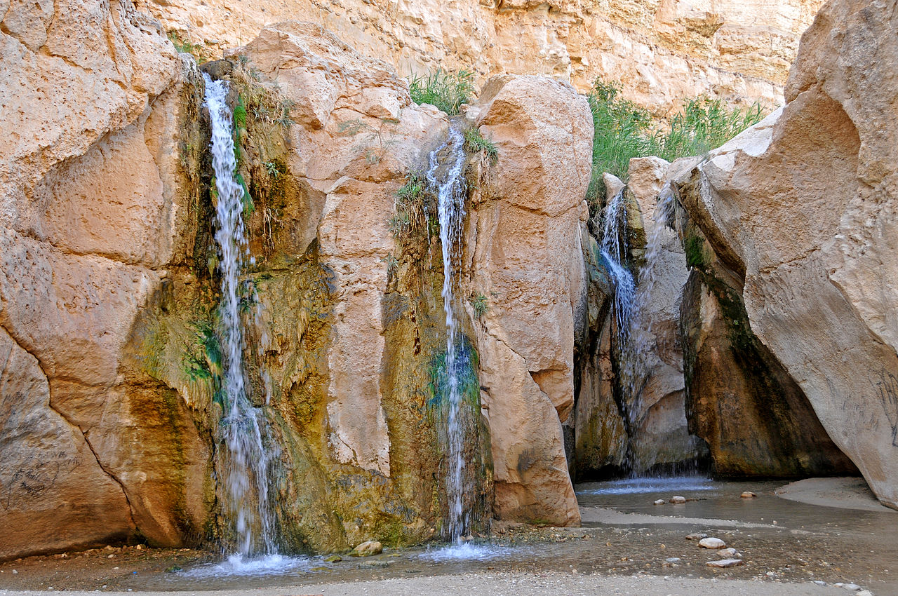
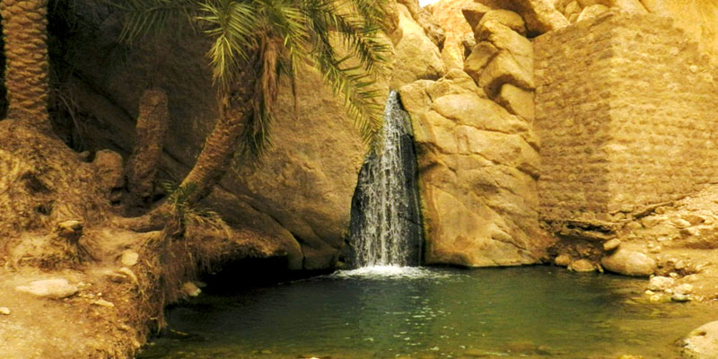
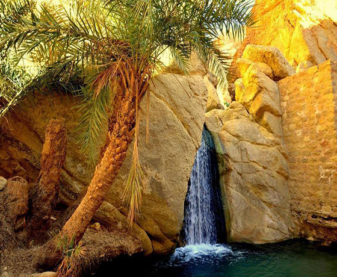
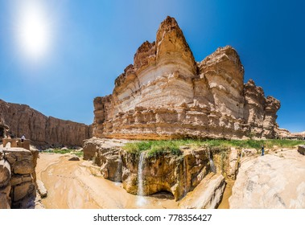
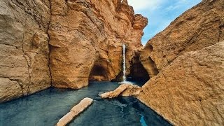

Située au sud de la Tunisie, cette petite ville trône au milieu de splendides palmeraies où la cruauté du désert est adoucie par la beauté du paysage à perte de vue.
Généralement, le peuple tunisien est connu pour être un peuple très généreux et convivial de nature. Et Tozeur n'échappe pas à la règle: tout le monde est le bienvenu et l'étranger est accueilli comme un roi.
Situé dans le sud de la Tunisie, Tozeur fait partie de ces nouvelles destinations touristiques axées sur le désert. Tozeur se trouve en effet aux portes du Sahara et propose surtout le tourisme dans le désert : excursion en 4x4, expédition en quad, ballade
en buggy, trekking pour admirer cette étendue infinie de sable brûlant et ses dunes.
Un coucher du soleil dans ce décor est un spectacle époustouflant que vous n'avez pas le droit de rater. Depuis quelques années, Tozeur attire la convoitise des investisseurs touristiques, ce qui fait que ses infrastructures hôtelières se sont beaucoup
développées surtout depuis les années 90. Sortez des sentiers battus et profitez de vos vacances autrement en choisissant de partir à Tozeur, d'autant que les offres de séjours sur cette destination se font de plus en plus nombreuses.
Et si vous avez envie de connaître l'art et le mode de vie traditionnel du coin, faites un détour au musée Dar Cheraït. À Tozeur, les activités abondent et le golf fait partie du lot. Et un green en plein désert, il faut le voir !
Tozeur, dans le sud de la Tunisie, est un peu la dernière oasis touristique avant le grand désert. Point de départ idéal pour lancer des excursions dans le Sahara, Tozeur est également une ville agréable qui connaît ses propres attraits... on y séjourne
donc avec plaisir !
L'hébergement à Tozeur est très simple, de la maison de jeune aux maisons d'hôtes, jusqu'aux palaces de mille et une nuits, tout y est.
Visites culturelles et thématiques
Des lieux à voir, des rues à explorer et des expériences emblématiques.
e musée Dar Cheraït Tozeur est un musée tunisien situé à quelques centaines de mètres de la palmeraie de la ville, aux portes du désert du Sahara. C’est le premier musée privé de Tunisie, il est fondé en 1990 par
Abderrazak Cheraït, maire de Tozeur, qui est l’initiateur de plusieurs projets culturels pour la mise en valeur du patrimoine tunisien. Le Musée Dar Cheraït Tozeur a été construit sur le modèle d’un palais bourgeois.
Dans les pièces du palais sont reconstituées des scènes de la vie tunisienne au XIXe siècle: la chambre du bey (le notable), la vie de la cuisine, une reproduction fidèle d’un hammam, le maître de l’école coranique,
et quelques scènes de mariage.
Le musée Dar Cheraït rassemble trois espaces indépendants, qui ont peu de choses en commun si ce n’est 3 approches différentes de la civilisation tunisienne. Si vous ne deviez visiter qu’une seule partie de l’ensemble, arpentez le très beau musée des
Arts et Traditions. Les enfants apprécieront, quant à eux, la Médina des Mille et Une Nuits. Un mélange de culture (ou prétendue) et de divertissement. Le soir, vous pouvez assister à un spectacle de son et
lumière sur les plus célèbres histoires d’Orient : les Mille et Une Nuits, Aladin, Ali Baba et les 40 voleurs… (45 minutes environ). Divertissant pour certains, décevant pour d’autres, les avis à la sortie seront
mitigés.
Aussi appellé le quartier du vieux Ouled el Hadef, la Medina de Tozeur est l’une des mieux conservées de Tunisie. Elle possède un magnifique mur de pierre qui l’entoure. On remarque à l’entrée la pierre traditionnelle
de la région: la briquette. Tous les murs et la plupart des bâtiments administratifs sont réalisés grâce à ce matériau construit au sud ouest de la ville. On peut d’ailleurs en visiter la fabrique.
A peine rentrés dans la cité, vous serez envoûté par le charme des petites ruelles voutées magnifiquement bien conservées. Une visite est indispensable pour bien comprendre la ville. Cette visite très agréable vous permettra d’arpenter les ruelles de
la Medina fortifiée sans avoir à consulter un plan. Au détour d’un chemin, vous tomberez sur l’une des plus vielles et plus belles portes de Tunisie. Celle-ci est travaillée en bois de palmier. Au cœur de la
cité, on trouve aussi l’école coranique et son minaret imposant, ainsi que la maison du bey, sorte de gouverneur du coin. Cette maison est d’ailleurs célèbre puisqu’elle a servi à Anthony Minghella pour tourner
quelques scènes du Patient Anglais. On y voit d’ailleurs une remarquable moucharabieh, sorte de fenêtre en bois de palme, permettant à la femme de regarder au dehors sans que celle-ci soit vue. La visite dure
environ une heure.
Se restaurer
Lieux incontournables où manger, boire et faire la fête.
On a proposé deux destinations pour vous à ne rater
Des lieux à voir, des rues à explorer et des expériences emblématiques.
Tamaghza
une nature généreuse et splandide
Voir Plus
Tamerza ( parfois écrite Tamaghza ) est une des plus belles Oasis de Montagnes. A plus de 300m d’altidude, elle est située à environ 70 km (50 mn) de l’aéroport deTozeur. L’oasis, qui procure l’eau, et une agréable fraicheur lors des chaleurs, tranche
d’avec ce paysage montagneux, tantôt beige, tantôt rose. Le site, autrefois appelé Ad Turres était alors chargé de la défense des frontières de l'Empire romain avant de devenir le siège d'un évêché sous les Byzantins. Devant
l’Oasis se dressent les ruines de l’ancien village de Tamerza, abandonné en 1969. Contrairement à ce qui se dit souvent, le village n’a pas été abandonné suite à des inondations, mais il s’est effondré suite à des pluies
qui ont duré plusieurs jours. Les matériaux n’ont pas résisté aux infiltrations d’eau et les villageois se sont installés à quelques centaines de mètres plus lois, l’actuel Tamerza avec un peu plus de 2500 habitants. Aujourd’hui
les ruines, appelées aussi «village endormi de Tamerza» sont visitées par des voyageurs en quête de souvenirs d’une terre Berbère oubliée. Seul le marabout est encore utilisé aujourd’hui. Certains soirs, le Tamerza Palace
& Spa, hôtel de Charme s’intégrant à la montagne juste devant et sur lequel veille le village depuis 1992, organise des soirées mystiques aux 5000 bougies.
― Gouvernerat de Tozeur
regarder plus de photos

Library
Architect Design
Night Sky
Cinematic

Tea Talk
Composite

Road
Landscape

Sea
Cityscape

Vintage
Cinematic
chebika
un milieu magique immanquable
Voir Plus
A une heure de route au nord-ouest de Tozeur, après avoir traversé le chott (lac salé) el-Gharsa, l'oasis de montagne de Chebika s'accroche au flanc de rochers désolés. Faites de pierres et de terre, les maisons ont été abandonnées pour des constructions
plus modernes en parpaings en contrebas. Elément indispensable à l'établissement de tout village tunisien, l'eau, présente sous forme de sources, permet de faire prospérer une palmeraie fournie au pied des anciennes maisons
de Chebika. Au coucher du soleil, le contraste est saisissant entre les cimes verdoyantes des palmiers et les sommets ocre alentour. Les amateurs de randonnée peuvent poursuivre leur exploration jusqu'à l'oasis de Tamerza
(compter 1 h 30).
.jpg)